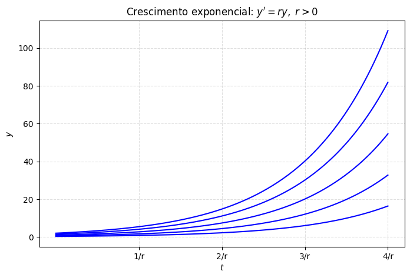
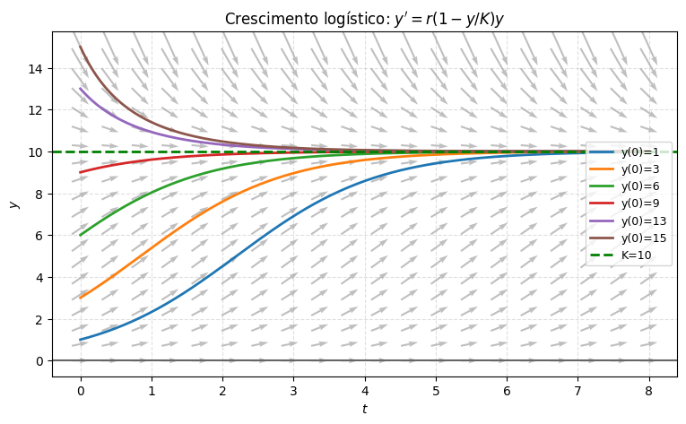
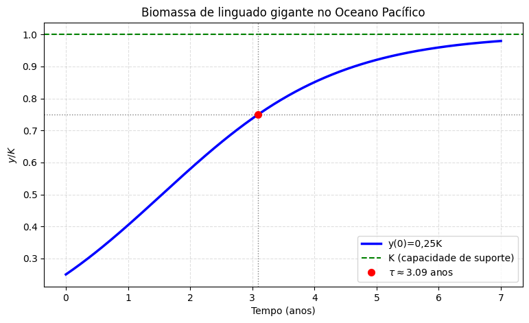
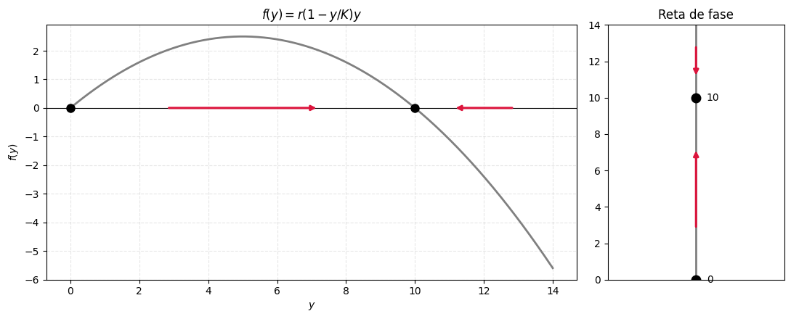
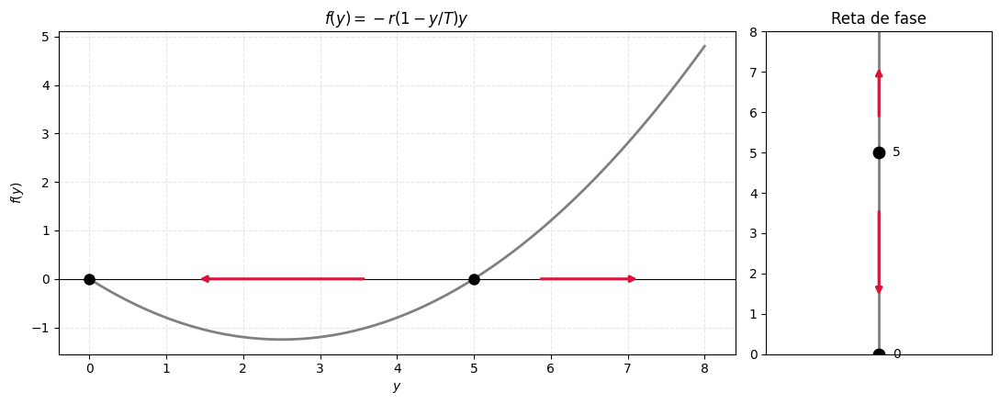
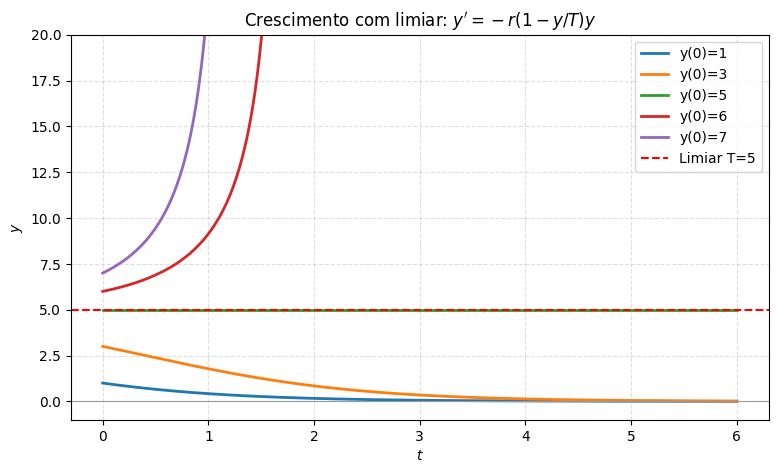
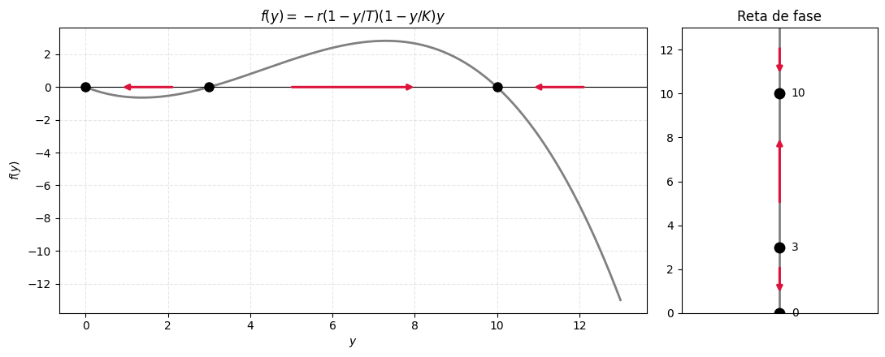
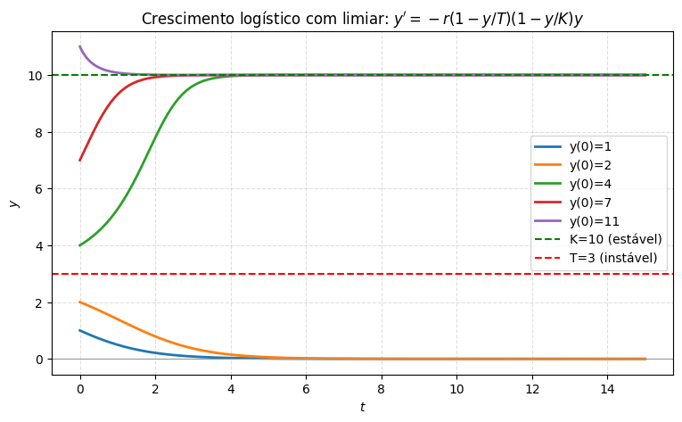

Equações Autônomas e Dinâmica Populacional#
No capítulo de classificação, vimos rapidamente que uma equação de primeira ordem é autônoma quando pode ser escrita como \(y'=f(y)\) — o lado direito não depende explicitamente de \(t\).
Nesta aula, vamos explorar essas equações a fundo, no contexto de dinâmica populacional, e descobrir algo notável: é possível entender o comportamento qualitativo das soluções sem resolver a equação, só olhando para o seu lado direito.
Crescimento exponencial: o modelo de Malthus#
A hipótese mais simples sobre o crescimento de uma população \(y(t)\) é que sua taxa de variação é proporcional ao valor atual — já vimos essa equação bem no início do curso, com outro nome:
com solução \(y(t) = y_0e^{rt}\).
Aqui \(r\) é chamada de taxa de crescimento (se \(r>0\)) ou de declínio (se \(r<0\)).
Esse é o modelo de Malthus, e ele prevê crescimento exponencial para sempre — o que, na prática, não pode ser verdade: mais cedo ou mais tarde, espaço, comida ou outros recursos limitados vão reduzir essa taxa de crescimento.
import numpy as np
import matplotlib.pyplot as plt
r_m = 0.4
t = np.linspace(0, 4/r_m, 200)
plt.figure(figsize=(8, 5))
for y0 in [0.3, 0.6, 1, 1.5, 2]:
plt.plot(t, y0*np.exp(r_m*t), 'b')
plt.title(r"Crescimento exponencial: $y' = ry,\ r>0$")
plt.xlabel("$t$"); plt.ylabel("$y$")
plt.xticks([1/r_m, 2/r_m, 3/r_m, 4/r_m], ['1/r', '2/r', '3/r', '4/r'])
plt.grid(True, linestyle='--', alpha=0.4)
plt.show()

O crescimento logístico (Verhulst)#
A ideia para consertar o modelo de Malthus é deixar a taxa de crescimento depender da própria população: grande quando \(y\) é pequeno (a espécie tem espaço e recursos de sobra), e cada vez menor — até ficar negativa — conforme \(y\) cresce e os recursos escasseiam.
Trocamos a constante \(r\) por uma função \(h(y)\):
A escolha mais simples de \(h(y)\) com esse comportamento é uma reta decrescente, \(h(y) = r - ay\) (com \(r,a>0\)).
Substituindo:
ou, escrevendo \(K=r/a\) (forma equivalente, mas mais fácil de interpretar):
Essa é a equação logística (ou de Verhulst).
Aqui \(r\) é a taxa de crescimento intrínseca (a taxa quando \(y\) é pequeno, sem nenhum fator limitante), e \(K\) é a capacidade de suporte — o tamanho populacional máximo que o ambiente consegue sustentar.
Resolvendo a equação logística por separação de variáveis#
Vamos resolver
supondo, por enquanto, que \(y\neq 0\) e \(y\neq K\) (voltamos a esses dois casos daqui a pouco). Separando as variáveis:
O lado esquerdo não é imediato de integrar do jeito que está, mas uma decomposição em frações parciais (uma técnica de Cálculo 2) simplifica bastante:
(Confira: colocando no mesmo denominador, os dois lados batem.)
Substituindo e integrando:
Combinando os logaritmos e aplicando a exponencial dos dois lados:
Usando a condição inicial \(y(0)=y_0\) para achar \(C = \dfrac{y_0}{1-y_0/K}\), e isolando \(y\) depois de um pouco de álgebra, chegamos à solução:
(É um bom exercício conferir essa álgebra — ou deixar o Python verificar para você, como faremos a seguir.)
Repare que essa fórmula também vale, por coincidência feliz, para os casos \(y_0=0\) e \(y_0=K\) que tínhamos deixado de fora: ela dá exatamente \(y(t)\equiv 0\) e \(y(t)\equiv K\).
import sympy as sp
t_s, r_s, K_s, y0_s = sp.symbols('t r K y0', positive=True)
y_s = y0_s*K_s / (y0_s + (K_s - y0_s)*sp.exp(-r_s*t_s))
lado_esquerdo = sp.diff(y_s, t_s)
lado_direito = r_s*(1 - y_s/K_s)*y_s
print("y'(t) - r(1-y/K)y =", sp.simplify(lado_esquerdo - lado_direito))
y'(t) - r(1-y/K)y = 0
r_, K_ = 1.0, 10.0
def y_logistica(t, y0):
return y0*K_ / (y0 + (K_ - y0)*np.exp(-r_*t))
def f_log(t, y):
return r_*(1 - y/K_)*y
t_grid = np.linspace(0, 8, 20)
y_grid = np.linspace(0, 15, 20)
T, Y = np.meshgrid(t_grid, y_grid)
dt_step = (8 - 0)/20*0.6
dT = np.ones(T.shape)*dt_step
dV = f_log(T, Y)*dt_step
t = np.linspace(0, 8, 200)
plt.figure(figsize=(9, 5))
plt.quiver(T, Y, dT, dV, color='gray', alpha=0.5, pivot='mid',
angles='xy', scale_units='xy', scale=1)
for y0 in [1, 3, 6, 9, 13, 15]:
plt.plot(t, y_logistica(t, y0), linewidth=2, label=f'y(0)={y0}')
plt.axhline(K_, color='green', linestyle='--', linewidth=2, label=f'K={K_:g}')
plt.axhline(0, color='0.4', linewidth=1.5)
plt.title(r"Crescimento logístico: $y' = r(1-y/K)y$")
plt.xlabel("$t$"); plt.ylabel("$y$")
plt.legend(loc='center right', fontsize=9)
plt.grid(True, linestyle='--', alpha=0.4)
plt.show()

Exemplo: a biomassa de linguado gigante no Oceano Pacífico#
O modelo logístico já foi usado para descrever o crescimento da biomassa de linguado gigante numa região do Oceano Pacífico, com parâmetros estimados \(r=0{,}71\)/ano e \(K=80{,}5\times10^6\) kg. Partindo de \(y_0=0{,}25K\), quanto vale a biomassa dois anos depois? E em que instante ela atinge \(75\%\) da capacidade de suporte?
Dá para isolar \(t\) algebricamente na fórmula (como o Boyce faz), mas vamos aproveitar e deixar o Python resolver isso numericamente para a gente:
from scipy.optimize import brentq
r_h, K_h = 0.71, 80.5e6
y0_h = 0.25*K_h
def y_h(t):
return y0_h*K_h / (y0_h + (K_h - y0_h)*np.exp(-r_h*t))
print(f"y(2) = {y_h(2):.3e} kg (~{y_h(2)/1e6:.1f} milhões de kg)")
tau = brentq(lambda t: y_h(t) - 0.75*K_h, 0, 10)
print(f"tau = {tau:.3f} anos")
t = np.linspace(0, 7, 300)
plt.figure(figsize=(9, 5))
plt.plot(t, y_h(t)/K_h, 'b', linewidth=2.5, label='y(0)=0,25K')
plt.axhline(1, color='green', linestyle='--', label='K (capacidade de suporte)')
plt.axhline(0.75, color='0.5', linestyle=':', linewidth=1)
plt.axvline(tau, color='0.5', linestyle=':', linewidth=1)
plt.plot(tau, 0.75, 'ro', markersize=7, label=fr'$\tau\approx{tau:.2f}$ anos')
plt.title("Biomassa de linguado gigante no Oceano Pacífico")
plt.xlabel("Tempo (anos)")
plt.ylabel("$y/K$")
plt.legend()
plt.grid(True, linestyle='--', alpha=0.4)
plt.show()
y(2) = 4.666e+07 kg (~46.7 milhões de kg)
tau = 3.095 anos

Análise geométrica: pontos de equilíbrio e a reta de fase#
Repare que o gráfico da solução geral, lá em cima, já contém a resposta: para qualquer \(y_0>0\), a solução converge para \(K\); as retas \(y=0\) e \(y=K\) nunca são cruzadas por nenhuma outra curva. Será que dava para prever esse comportamento sem resolver a equação, só olhando para ela?
A resposta é sim — e a ideia é surpreendentemente simples. Como a equação é autônoma, \(y'=f(y)\), o valor de \(f(y)\) (a inclinação) depende só da altura \(y\), não do instante \(t\). Então basta estudar o gráfico de \(f(y)\) em função de \(y\) para saber tudo sobre o comportamento qualitativo das soluções — sem integrar nada!
Pontos de equilíbrio (ou pontos críticos). São os valores de \(y\) onde \(f(y)=0\) — ali, \(y'=0\), então a função constante \(y(t)\equiv y^*\) é uma solução (uma solução de equilíbrio). Para a equação logística, \(f(y)=r(1-y/K)y=0\) dá \(y=0\) e \(y=K\) — exatamente as duas retas horizontais que vimos no gráfico.
Fora dos pontos de equilíbrio, o sinal de \(f(y)\) diz se \(y\) está crescendo ou decrescendo:
Onde \(f(y)>0\), temos \(y'>0\): \(y\) cresce.
Onde \(f(y)<0\), temos \(y'<0\): \(y\) decresce.
Isso é tudo que precisamos! Vamos visualizar o gráfico de \(f(y)\), com setas indicando essa direção de crescimento/decrescimento, e também a versão vertical dessa mesma informação — o eixo \(y\) sozinho, chamado de reta de fase:
def plot_fy_e_reta_de_fase(f, y_min, y_max, equilibrios, titulo):
fig, axs = plt.subplots(1, 2, figsize=(11, 4.5), gridspec_kw={'width_ratios': [3, 1]})
y = np.linspace(y_min, y_max, 400)
axs[0].plot(y, f(y), color='gray', linewidth=2)
axs[0].axhline(0, color='black', linewidth=0.8)
for eq in equilibrios:
axs[0].plot(eq, 0, 'ko', markersize=8, zorder=5)
axs[0].set_xlabel("$y$"); axs[0].set_ylabel("$f(y)$")
axs[0].set_title(titulo)
axs[0].grid(True, linestyle='--', alpha=0.3)
# pontos que dividem o domínio em intervalos: bordas + equilíbrios
pts = sorted(equilibrios)
if y_min < pts[0]:
pts = [y_min] + pts
if y_max > pts[-1]:
pts = pts + [y_max]
axs[1].vlines(0, y_min, y_max, color='gray', linewidth=2)
for eq in equilibrios:
axs[1].plot(0, eq, 'ko', markersize=9, zorder=5)
axs[1].annotate(f'{eq:g}', xy=(0.12, eq), va='center', fontsize=10)
axs[1].set_xlim(-1, 1)
axs[1].set_ylim(y_min, y_max)
axs[1].set_xticks([])
axs[1].set_title("Reta de fase")
for i in range(len(pts)-1):
a, b = pts[i], pts[i+1]
mid = (a+b)/2
sinal = np.sign(f(np.array([mid]))[0])
halflen = 0.22*(b-a)
dx = halflen*sinal
axs[0].annotate('', xy=(mid+dx, 0), xytext=(mid-dx, 0),
arrowprops=dict(arrowstyle='-|>', color='crimson', lw=2.2))
dy = halflen*sinal
axs[1].annotate('', xy=(0, mid+dy), xytext=(0, mid-dy),
arrowprops=dict(arrowstyle='-|>', color='crimson', lw=2.2))
plt.tight_layout()
plt.show()
def f_log_y(y):
return r_*(1 - y/K_)*y
plot_fy_e_reta_de_fase(f_log_y, 0, 14, [0, K_], r"$f(y)=r(1-y/K)y$")

No gráfico da esquerda, a parábola cruza o eixo horizontal exatamente nos pontos de equilíbrio \(y=0\) e \(y=K\); entre eles, \(f(y)>0\) (seta para a direita — \(y\) cresce); acima de \(K\), \(f(y)<0\) (seta para a esquerda — \(y\) decresce). Na reta de fase (direita), a mesma informação aparece de forma ainda mais direta: as setas por perto de \(K\) convergem para ele, e as setas por perto de \(0\) se afastam dele.
Isso define os dois conceitos centrais desta aula:
Equilíbrio assintoticamente estável: soluções que começam perto dele tendem a ele quando \(t\to\infty\). Aqui, \(y=K\).
Equilíbrio instável: soluções que começam perto dele se afastam. Aqui, \(y=0\).
Ou seja: por menor que seja a população inicial (desde que positiva), ela cresce e se aproxima de \(K\); e se a população começar acima de \(K\), ela decresce até \(K\). Tudo isso, sem resolver a equação diferencial — só olhando para o sinal de \(f(y)\)!
Vale registrar um ponto sutil: mesmo um termo não linear «pequeno» (o \(-ay^2\) que diferencia a equação logística da exponencial pura) muda completamente o destino da solução no longo prazo — de crescimento ilimitado para uma acomodação em \(K\). É um bom lembrete de por que a distinção linear/não linear, que vimos lá na aula de classificação, importa tanto.
Um limiar crítico#
Considere agora uma equação parecida, mas com um sinal de menos a mais:
Os pontos de equilíbrio continuam sendo as raízes do lado direito: \(y=0\) e \(y=T\). Mas o sinal trocado muda tudo:
Para \(0<y<T\): \(-r(1-y/T)y < 0\), então \(y\) decresce (em direção a \(0\)).
Para \(y>T\): \(-r(1-y/T)y > 0\), então \(y\) cresce (se afastando de \(T\)).
Ou seja, os papéis se inverteram por completo em relação ao caso logístico: agora \(y=0\) é assintoticamente estável, e \(y=T\) é instável. \(T\) funciona como um limiar: populações que começam abaixo dele encolhem até a extinção; populações que começam acima dele crescem sem parar.
r_T, T_ = 1.0, 5.0
def f_thr_y(y):
return -r_T*(1 - y/T_)*y
plot_fy_e_reta_de_fase(f_thr_y, 0, 8, [0, T_], r"$f(y)=-r(1-y/T)y$")

Limiares críticos como esse aparecem em vários contextos além da biologia. Em mecânica dos fluidos, por exemplo, pequenas perturbações num escoamento laminar costumam seguir uma equação parecida com essa: abaixo de uma certa amplitude crítica \(T\), a perturbação se dissipa e o escoamento permanece laminar; acima dela, a perturbação cresce e o escoamento se torna turbulento.
Podemos resolver essa equação exatamente do mesmo jeito que a logística (é separável!). Na verdade, repare que a equação do limiar sai da equação logística trocando \(K\to T\) e \(r\to -r\) — então podemos fazer essa mesma substituição direto na solução que já temos:
Repare no expoente positivo: se \(y_0>T\), o termo \((T-y_0)e^{rt}\) é negativo e cresce em módulo sem parar — o denominador zera num instante finito \(t^*\), e a população explode em tempo finito (não só quando \(t\to\infty\), como no crescimento exponencial comum)! Vamos visualizar:
t_s2, r_s2, T_s2, y0_s2 = sp.symbols('t r T y0', positive=True)
y_thr_s = y0_s2*T_s2 / (y0_s2 + (T_s2 - y0_s2)*sp.exp(r_s2*t_s2))
lado_esquerdo2 = sp.diff(y_thr_s, t_s2)
lado_direito2 = -r_s2*(1 - y_thr_s/T_s2)*y_thr_s
print("y'(t) - [-r(1-y/T)y] =", sp.simplify(lado_esquerdo2 - lado_direito2))
y'(t) - [-r(1-y/T)y] = 0
def y_limiar(t, y0):
denom = y0 + (T_ - y0)*np.exp(r_T*t)
y = y0*T_/denom
return np.where(denom > 0, y, np.nan)
t = np.linspace(0, 6, 400)
plt.figure(figsize=(9, 5))
for y0 in [1, 3, 5, 6, 7]:
plt.plot(t, y_limiar(t, y0), linewidth=2, label=f'y(0)={y0}')
plt.axhline(T_, color='red', linestyle='--', label=f'Limiar T={T_:g}')
plt.axhline(0, color='0.6', linewidth=0.8)
plt.ylim(-1, 20)
plt.title(r"Crescimento com limiar: $y' = -r(1-y/T)y$")
plt.xlabel("$t$"); plt.ylabel("$y$")
plt.legend()
plt.grid(True, linestyle='--', alpha=0.4)
plt.show()

Crescimento logístico com limiar#
O modelo de limiar da seção anterior tem um problema: ele prevê crescimento ilimitado para \(y_0>T\), o que não é realista — toda população real esbarra, cedo ou tarde, numa capacidade de suporte. A correção natural é combinar os dois efeitos, o limiar e a capacidade de suporte, numa equação só:
Agora temos três pontos de equilíbrio: \(y=0\), \(y=T\) e \(y=K\). Analisando o sinal do lado direito em cada faixa:
\(0<y<T\): o lado direito é negativo — \(y\) decresce (rumo a \(0\)).
\(T<y<K\): o lado direito é positivo — \(y\) cresce (rumo a \(K\)).
\(y>K\): o lado direito é negativo — \(y\) decresce (rumo a \(K\)).
Então \(y=0\) e \(y=K\) são assintoticamente estáveis, e \(y=T\) (o limiar) é instável, espremido entre os dois:
r_c, T_c, K_c = 1.0, 3.0, 10.0
def f_comb_y(y):
return -r_c*(1 - y/T_c)*(1 - y/K_c)*y
plot_fy_e_reta_de_fase(f_comb_y, 0, 13, [0, T_c, K_c], r"$f(y)=-r(1-y/T)(1-y/K)y$")

from scipy.integrate import odeint
def f_comb(y, t):
return -r_c*(1 - y/T_c)*(1 - y/K_c)*y
t = np.linspace(0, 15, 400)
plt.figure(figsize=(9, 5))
for y0 in [1, 2, 4, 7, 11]:
sol = odeint(f_comb, y0, t)
plt.plot(t, sol[:, 0], linewidth=2, label=f'y(0)={y0}')
plt.axhline(K_c, color='green', linestyle='--', label=f'K={K_c:g} (estável)')
plt.axhline(T_c, color='red', linestyle='--', label=f'T={T_c:g} (instável)')
plt.axhline(0, color='0.6', linewidth=0.8)
plt.title(r"Crescimento logístico com limiar: $y'=-r(1-y/T)(1-y/K)y$")
plt.xlabel("$t$"); plt.ylabel("$y$")
plt.legend()
plt.grid(True, linestyle='--', alpha=0.4)
plt.show()

Repare que, dessa vez, não escrevemos uma fórmula fechada para \(y(t)\) — a decomposição em frações parciais fica bem mais trabalhosa com três raízes, e usamos integração numérica (odeint) para desenhar as curvas. Isso ilustra bem o valor da abordagem geométrica: mesmo sem uma fórmula explícita, sabíamos exatamente qual seria o formato qualitativo das soluções antes mesmo de calcular qualquer coisa.
Esse tipo de modelo (com limiar) já foi usado para descrever a extinção do pombo-passageiro nos Estados Unidos. Até o final do século XIX, a espécie existia em quantidades imensas — bilhões de indivíduos. Mas ela só conseguia se reproduzir com sucesso quando presente em grandes concentrações (um limiar \(T\) relativamente alto). A caça intensa reduziu a densidade local da espécie abaixo desse limiar, mesmo com um número absoluto de indivíduos ainda grande — e a população, presa no lado errado do limiar, entrou em colapso. O último pombo-passageiro morreu em 1914. É um exemplo real (e triste) de como um limiar crítico, e não só o tamanho absoluto da população, pode decidir o destino de uma espécie.
O que vem a seguir#
Com isso, fechamos o estudo das equações de primeira ordem: lineares (fator integrante), separáveis (separação de variáveis) e autônomas (reta de fase e estabilidade) — três ferramentas complementares, cada uma com seu domínio de aplicação.
Vamos guardar essa ideia de reta de fase e estabilidade — ela vai reaparecer, de um jeito mais rico, quando estudarmos sistemas de equações lineares mais adiante no curso. Por enquanto, seguimos para o próximo grande tema: equações diferenciais de segunda ordem, que aparecem naturalmente em sistemas mecânicos e elétricos.